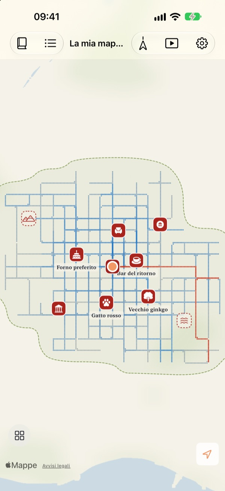
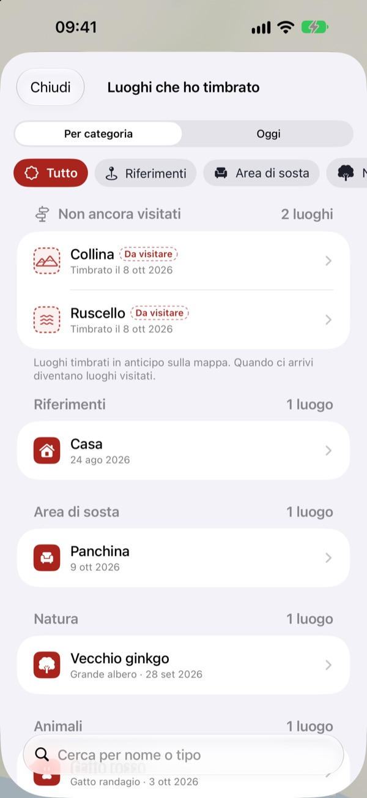
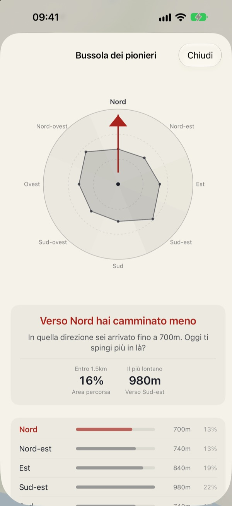
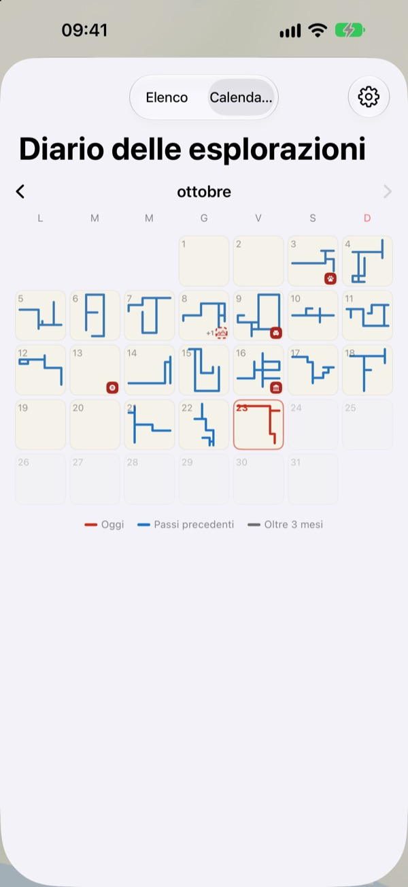

Una mappa che si
riempie solo a piedi
Parte da un foglio bianco. Si riempiono, un punto alla volta, solo i posti dove cammini, e percorrere cento volte la stessa via non la allarga. Per far crescere la mappa, prendi una strada nuova.
Tutte le funzioni sono gratuite, senza pubblicità.

Fai due passi
Trascina un dito o il mouse sul foglio per camminare. I punti blu sono vie già percorse. Guarda come cambia «Il percorso di oggi» se ci ripassi sopra o se vai da un’altra parte.
Sempre le stesse strade?
Un contapassi conta i passi, ma non chiede mai dove ti hanno portato. Casa, stazione e ritorno, e l’anello si riempie lo stesso, mentre la stradina accanto resta un mistero per anni. Buktu Buktu conta solo i percorsi che fai per la prima volta: un buon motivo per allungare di un isolato oggi.
Timbra i posti dove sei stato e dove vuoi andare
Timbra il punto in cui ti trovi, oppure tieni premuto un punto qualsiasi della mappa. Ci sono 212 timbri tra cui scegliere, divisi per categoria.
Un timbro messo dove non hai mai camminato resta un luogo da visitare e diventa visitato quando ci arrivi davvero. Fotografa l’insegna di un negozio: lo sfondo viene ritagliato e l’insegna resta in piedi come adesivo in quel punto.

Prossima passeggiata: dove sei andato meno
La Bussola dei pionieri divide la zona intorno a te in otto direzioni e indica quella che hai percorso meno.
Impronte di oggi mette in fila i posti in cui ti sei fermato oggi, con la distanza percorsa tra uno e l’altro.

Ogni giorno lascia una forma
Il calendario disegna la forma della camminata di ogni giorno invece di un numero. Tieni un diario con testo e foto, e scopri quanta parte di ogni passeggiata era terreno nuovo.
Scegli un periodo e guarda la tua mappa disegnarsi in un video da esportare.

Tre passi per iniziare
- 1
Apri l’app
Si spiega un foglio bianco.
- 2
Consenti la posizione
Scegli «Sempre» e attiva «Movimento e fitness» per registrare le camminate senza aprire l’app.
- 3
Esci
Meno conosci la strada, più cresce la mappa.
Come leggere la mappa
- Punti rossi
- dove hai camminato oggi
- Punti indaco
- passi precedenti, più scuri dove passi più spesso
- Punti grigi
- posti in cui non torni da oltre tre mesi. Sbiadiscono, ma non spariscono mai
- Timbro tratteggiato
- un luogo «Da visitare». Diventa visitato quando ci arrivi
- I percorsi che ho disegnato
- lunghezza totale dei percorsi fatti per la prima volta
- Il percorso di oggi
- quanta parte della camminata di oggi era nuova
- Vedi tutto insieme
- nelle impostazioni, apre la Bussola dei pionieri, Impronte di oggi e il film della tua mappa
Puoi scegliere tra la mappa a inchiostro e la Mappa illustrata.
Tutte le funzioni sono gratuite
Gratis
- Una mappa che si riempie solo a piedi, con il conteggio dei percorsi nuovi
- 212 timbri e adesivi dalle insegne
- Bussola dei pionieri e Impronte di oggi
- Calendario e diario con testo e foto
- Esporta il video della tua mappa che si disegna
- Widget per la schermata Home e la schermata di blocco
- Sincronizzazione iCloud tra dispositivi
Sostieni lo sviluppatore
- Se ti va, lascia una piccola mancia dalle impostazioni
- La mancia non sblocca nulla. L’app resta identica
Niente pubblicità, niente abbonamento.
Domande
Ho camminato, ma sulla mappa non compare nulla.
Vai in Impostazioni > Buktu Buktu > Posizione, scegli «Sempre» e attiva «Movimento e fitness». Così la registrazione funziona anche con l’app chiusa. Se nelle impostazioni dell’app hai scelto la modalità di registrazione che risparmia batteria, apri l’app prima di partire. Le posizioni poco precise vengono salvate ma non disegnate.
Vengono registrati i tragitti in auto o in metro?
No. L’app usa i dati di movimento e la velocità per disegnare solo camminata e corsa, ed esclude i tratti che sembrano fatti in veicolo. Ogni tanto può sbagliare.
Faccio lo stesso percorso ogni giorno e la mappa non cresce.
È la regola. Tutto ciò che è entro 30 m da dove hai già camminato conta come la stessa strada, quindi solo i percorsi nuovi si aggiungono a «I percorsi che ho disegnato». Anche il marciapiede di fronte conta come la stessa strada. La Bussola dei pionieri ti mostra dove hai camminato meno.
La mia posizione viene inviata da qualche parte?
Non allo sviluppatore. Passi, timbri, diario e foto restano sul tuo dispositivo e nel tuo iCloud privato, e lo sviluppatore non può vederli. Le statistiche d’uso anonime non includono mai coordinate, testi del diario, nomi di luoghi o foto. Per trasformare le coordinate in nomi di luoghi si usano i servizi di Apple Mappe. Per i dettagli, consulta l’Informativa sulla privacy qui sotto.
Le mie registrazioni passano su un nuovo dispositivo?
Sì. Accedi con lo stesso Account Apple sul nuovo dispositivo e lascia iCloud attivo: passi, timbri, diario e foto ti seguono.
Come elimino un timbro o una foto?
Elimina i timbri dall’elenco «Luoghi che ho timbrato» e tieni premuta una foto del diario per eliminarla. È in programma un modo per cancellare in un colpo tutti i percorsi e le voci del diario.
Come aggiungo il widget?
Tieni premuto sulla schermata Home, tocca Modifica > Aggiungi widget e scegli Buktu Buktu. Per la schermata di blocco, tienila premuta e tocca Personalizza. Il widget della schermata Home mostra forma e lunghezza del percorso di oggi, quello della schermata di blocco la distanza di oggi.
Di cosa ho bisogno?
Di un iPhone con iOS 17.0 o successivo.
Come vi contatto?
Invia un feedback dalle impostazioni dell’app o scrivici all’indirizzo qui sotto. Ti risponderemo il prima possibile.
Domande o suggerimenti? Scrivi a leeo@kakao.com.